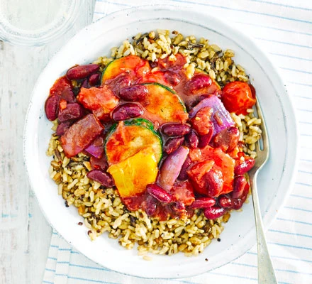

This is a really good recipe and It's pretty easy to make and tastes really good!
The easiest chilli you'll ever make, with ready-to-eat grains, kidney beans in chilli sauce and summer veggies - it's 4 of your 5-a-day too!
My vegetarian chili recipe is filled with the chili essentials: onion, garlic, red bell pepper, pinto and kidney beans, lime, olive oil, salt, and black pepper. I also add corn kernels for a colorful twist. Fresh or frozen corn works equally well, adding pops of yellow and a little crunch.
Ingredients
- 400g pack oven-roasted vegetables
- 1 can kidney beans in chilli sauce
- 1 can chopped tomatoes
- 1 ready-to-eat mixed grain pouch
Recipe instructions
- Heat oven to 200C/180C fan/ gas 6. Cook the vegetables in a casserole dish for 15 mins. Tip in the beans and tomatoes, season, and cook for another 10-15 mins until piping hot. Heat the pouch in the microwave on High for 1 min and serve with the chilli.
Return to top
Return to main page